This Accessibility evaluation was not conducted with any user of assistive technology. It is highly recommended to test products with target users, as well as with users of assistive technology.
This accessibility audit was conducted on a MacBook Pro with a Macintosh operating system version 10.14.5 and on a DELL Latitude E7450 with a Windows 10 operating system
The product was accessed with a Chrome browser via https://harvardcs.info/
The testing tools used for this audit were:
An inspection of the content revealed several accessibility issues.
Even though most of the required A and AA WCAG 2.1 guidelines were detected, only
testing with native users of assistive technology will ensure that all the content is
properly accessible.
User testing should be scheduled after all the accessibility issues listed below are
addressed.
The form element has a label, but text has not been added (label is empty).
<div class="searchbox"> <label for="search-by"> <i class="fa fa-search"></i> </label> <input data-search-input="" id="search-by" type="text" placeholder="Search..." autocomplete="off"> <span data-search-clear=""><i class="fa fa-close"></i></span> </div>
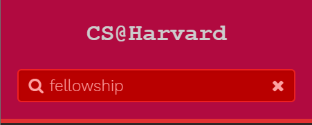
Add the text for the form element within the label-tag or WAI-ARIA aria-label
or aria-labelledby attribute that is already present.
aria-label attribute
aria-labelledby attribute
<div class="searchbox"> <label for="search-by"> <i class="fa fa-search"
</label> <input data-search-input="" id="search-by" type="text" placeholder="Search..." autocomplete="off" aria-labelledby="search-by"> <span data-search-clear=""><i class="fa fa-close"
</div>
aria-label="Type search term"></i>
aria-labelledby="search-by"
aria-label="Clear search"></i></span>
There is no information that indicates any changes of the check icons:
<i class="fa fa-check read-icon" style=""></i>
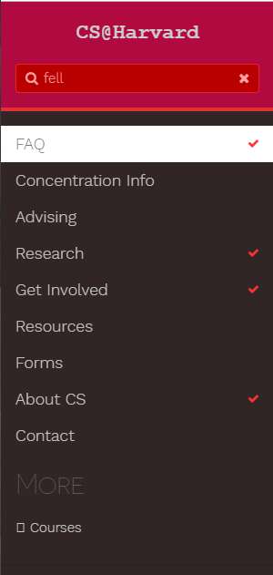
Use WAI-ARIA state and property attributes to expose the state, properties and values of a user interface component so that they can be read and set by assistive technology, and so that assistive technology is notified of changes to these values. The WAI-ARIA specification provides a normative description of each attribute, and the role of the user interface elements that they support. When rich internet applications define new user interface widgets, exposing the state and property attributes enables users to understand the widget and how to interact with it.
aria-label to provide labels for objects
Define the role of an element using the role attribute with one of the non-abstract values defined in the
WAI-ARIA Definition of Roles
.
The WAI-ARIA specification provides an informative description of each role,
how it relates to other roles, and the states and properties for each role.
When rich internet applications define new user interface widgets,
exposing the roles enables users to understand the widget and how to interact with it.
The aria-labelledby attribute associates an element with text that is visible elsewhere on the page
by using an ID reference value that matches the ID attribute of the labeling element.
Assistive technology such as screen readers use the text of the element identified by the value of the aria-labelledby
attribute as the text alternative for the element with the attribute.
It appears that color is the only distinguishing feature about links in blocks of text.
If links in blocks of text are identified only by color, the color contrast ratio between the link text and the surrounding text needs to be at 4.5:1 for normal text and 3:1 for large text, and a contrast ratio of at least 3:1 for graphics and user interface components (such as form input borders). This is not the case here
Furthermore, for links identified only by color there should be additional visual cues when users point to the link with their mouse or move keyboard focus to the link. The additional visual cues could be underlining the link or making it bold.
This applies to links that are visually part of a block of text. Menu items etc. should not be considered here.
Consider any of the following:
placeholder
and added text (MENU-SEARCH-BOX-ICONS-color) from #FDA1A1 to #FDC9C9
MENU-SECTION-ACTIVE-CATEGORY-color)
from #777777 to #737373
background-color of the sidebar (MENU-SECTIONS-BG-color)
from #312525 to #000000
color of "MORE" the sidebar (MAIN-TITLES-TEXT-color)
from #5e5e5e to #7A7A7A
Change the font color of links (MAIN-LINK-color)
from #F31C1C to #DA0B0B
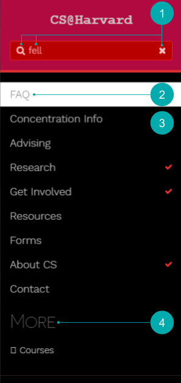
Change the color of div.notices.info
from #F0B37E to #AC5C15
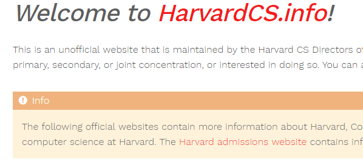
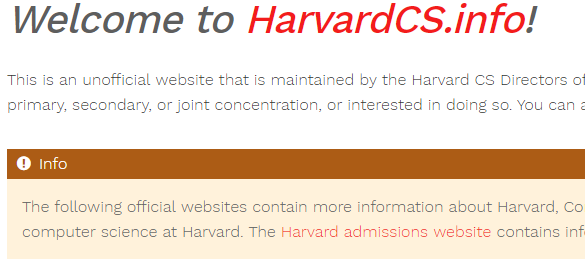
Change the color of div.notices.tip
from #5cb85ccc to #3A833A
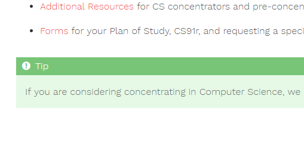
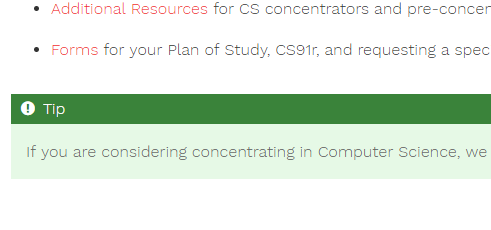
Change the font color of credits
from lightgrey to #737373
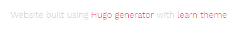
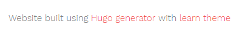
Change the font color of links (MAIN-LINK-color)
from #F31C1C to #DA0B0B
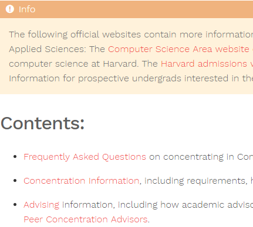
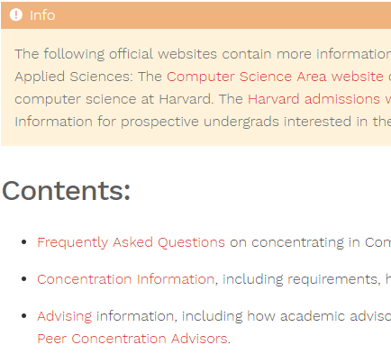
It is not currently possible to leverage the search functionality without the use of a mouse.
Just by using the tab key, search results can be displayed but by the next tab key stroke,
the search results are hidden and the focus moves to the first item of the left navigation ("FAQ")
Here is the current sequence
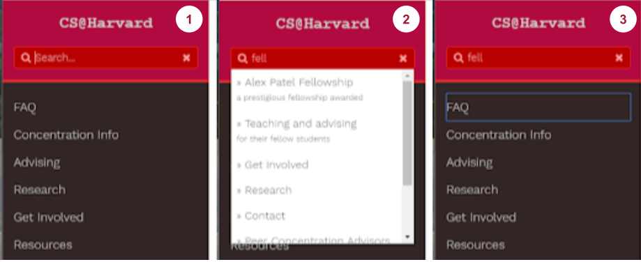
Ensure that the tabbing order defined on the page is logical, that the tab index has a meaningful sequence, that does not interfere with the sequence for the entire page, and that the sequence for the entire page is meaningful.
role function to indicate the presence of the dynamic drop down
Screen readers easily detect heading structure (h1, h2, h3, etc.)
and can present it to assistive technology users as an interactive table of content.
Reviewing heading structure is one of the first steps assistive technology users take
when visiting a web site. The screen reader "View by headings" filter allows to quickly comprehend
the information hierarchy (when headings are correctly implemented) and also turns headings into anchor links
to facilitate navigation and content access.
For this reason, each topic link in the left navigation should be also headings (possibly h3.
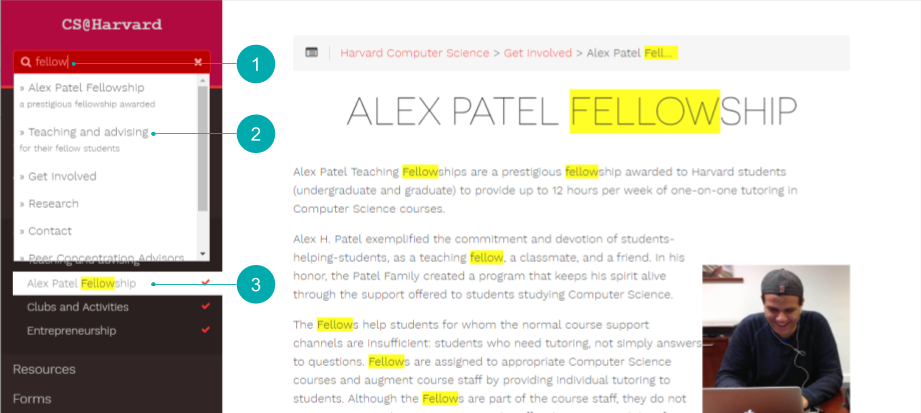
There is no information with regards to Harvard University accessibility resources
Add a link to Harvard accessibility resources. The Harvard University website (and many others) sports in the footer an "Accessibility" link, which leads to the University Disability Resources website. Consider to place this link under "Contact".
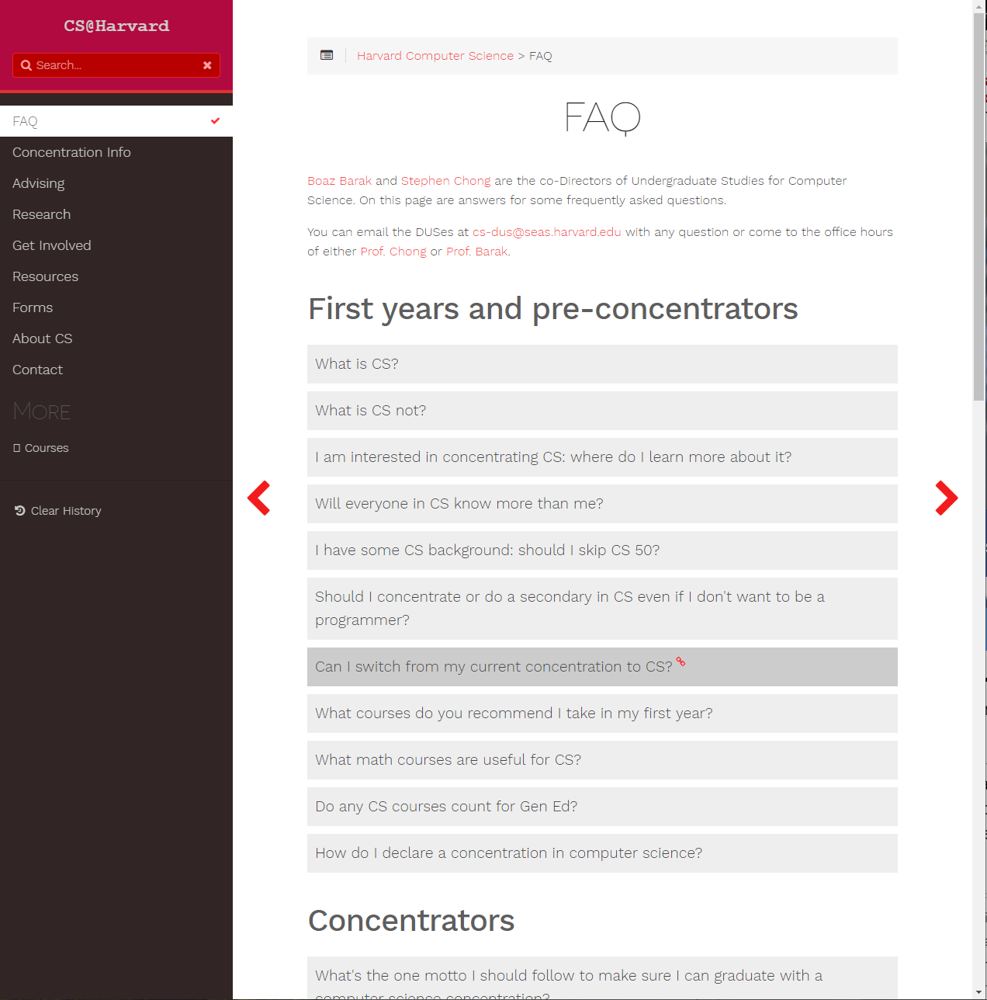
The style imitates the new SEAS website while colors follow the SEAS Identity Guidelines
Code recommendations are shown in the screen capture below and can be viewed in this repository,
in which a copy of the code of corrent website has been modified and commented:
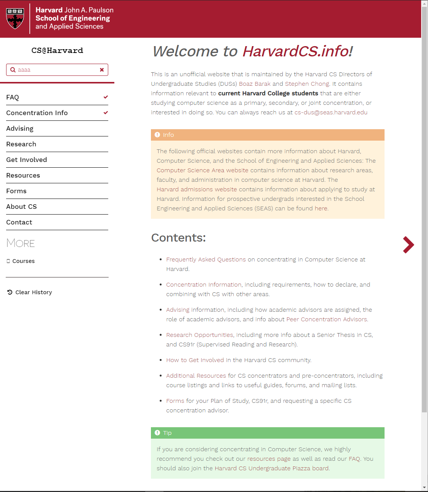